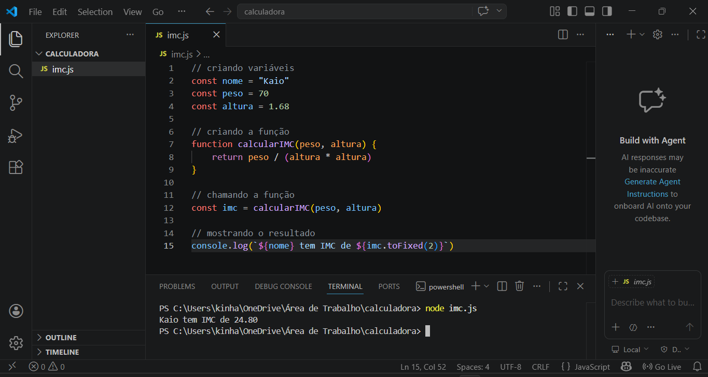

Desenvolvedora Front-end
Sou desenvolvedora front-end apaixonada por criar experiências digitais modernas e responsivas. Trabalho com HTML, CSS e JavaScript, desenvolvendo interfaces que unem estética e funcionalidade. Estou em constante evolução, buscando aprimorar minhas habilidades e entregar soluções cada vez mais eficientes e profissionais.
Site responsivo desenvolvido com HTML, CSS e JavaScript. Possui menu de navegação com links internos para diferentes seções da página, galeria com imagens de trabalhos de design gráfico e formulário de contato via e-mail. Também inclui botão de contato via WhatsApp com comportamento flutuante, acompanhando a rolagem da tela. Responsivo no notebooke no android.
Link do projetoDesenvolvi o site Ritmo Quente, uma landing page responsiva para uma academia fictícia, utilizando HTML e CSS. O projeto apresenta uma interface moderna e dinâmica, com foco em experiência do usuário, incluindo seções como apresentação da academia, aulas oferecidas, vídeos interativos e planos de assinatura. Implementei efeitos visuais com animações em CSS, layout adaptável para diferentes dispositivos (mobile, tablet e desktop) e organização semântica do conteúdo. O site também conta com uma página de matrícula integrada a formulário funcional para captação de leads. O objetivo do projeto foi praticar conceitos de responsividade, design visual atrativo e estruturação de páginas web voltadas para conversão.
Link do projeto
Desenvolvi uma Calculadora de IMC (Índice de Massa Corporal) utilizando JavaScript executado no ambiente Node.js, com foco na prática de lógica de programação. A aplicação funciona via terminal, permitindo ao usuário inserir peso e altura por meio de entrada de dados, realizando o cálculo do IMC e exibindo o resultado junto com a classificação correspondente
Link do projetoAprendizado prático através de aulas online e projetos próprios, com foco em criação de layouts responsivos e estilização moderna.
Estudo de lógica de programação e desenvolvimento de funcionalidades interativas, incluindo projetos executados no Node.js.
Aprendizado de versionamento de código, organização de projetos e publicação utilizando GitHub Pages.